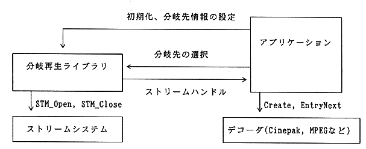

Return to previous page ｜ Return to menu ｜ Go to next page
-
1.2 Branch playback library function overview
-
(1) Overview of branch destination information (scenario) settings
- Set branch destination candidates for each stream as branch destination information (scenario).
-
(2) Stream prefetch function required for branching
- Manages the open / close of the stream in order to branch the stream smoothly. By prefetching the opened stream (branch destination candidate) into the CD buffer, it can be taken out without interruption when the branch destination is determined.
-
(3) Branch destination selection function
- Select the actual branch destination from the branch destination candidates.
-
(4) Branch destination stream notification function
- Notifies the application of the stream to be played next according to the selected branch destination.

Figure 1.2 Stream system overview diagram
Return to previous page ｜ Return to menu ｜ Go to next page